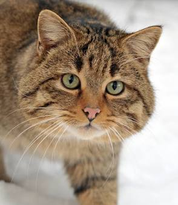

Кіт

Кіт свійський (Felis catus)
Кіт свійський (Felis catus) — невеликий хижий ссавець родини котових, який живе поруч із людиною близько 9–10 тисяч років. На відміну від собак, коти одомашнили себе самі: їх привабили гризуни біля перших зерносховищ на Близькому Сході, а люди оцінили користь від таких «охоронців».
Звички та світ котів
Поведінка
- Люблять спостерігати з висоти та шукати теплі куточки
- Часто активні вранці й увечері
- Подають сигнали настрою хвостом і вухами
Цікаве про одомашнення
- Поруч із людиною живуть приблизно 9–10 тисяч років
- Спочатку допомагали берегти запаси зерна від гризунів
- З часом стали вірними домашніми улюбленцями